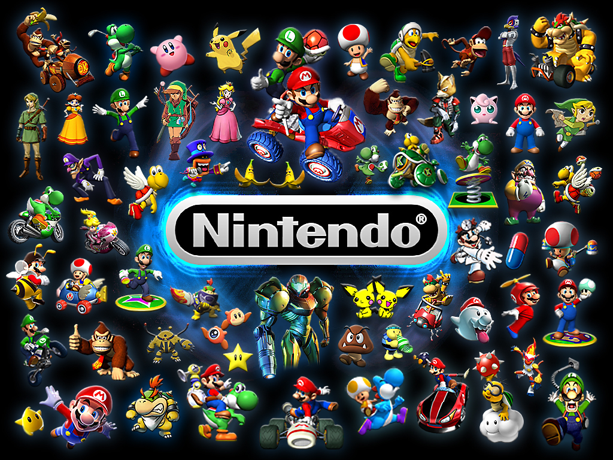

The Giants of the Gaming Industry
Many companies have risen and fallen in the lifespan of the gaming industry. Two notable companies who fit this description are SEGA and Atari. Today however, we have three very strong companies that make up the staple of the gaming industry: Microsoft, Sony, and Nintendo.
| Company Name |
Year of first gaming console release |
# of consoles released in lifetime |
# of First Party Studios |
Current console |
Console price |
Nintendo |
1983 |
14 |
7 |
Nintendo Switch OLED |
$350 |
| Sony |
1994(Japan) 1995(USA) |
7 |
18 |
Playstation 5 |
$499/$399(Digital only console) |
| Microsoft |
2000 |
5 |
33 |
Xbox Series X/S |
$499/$299 |
Nintendo
Nintendo is the household console name that has truly survived the test of time. Ever since the NES, Nintendo has constantly taken innovation after innovation with their products and continues to do so to this day. The most notable strides Nintendo has taken are as follows:
- Created many of the most recognizable gaming icons to this very day.
- Revolutionized the motion controller with the Wii Mote and Joy-Con
- Helped stop the games industry crash of '83.
- Invented the D-Pad.
- First handheld.
- Was both well-known in arcades and in the home.
- First to use an analog stick with the N64.
- First ever home VR with the Virtual Boy
- Created many handheld consoles such as the Game Boy and Nintendo DS
- Made the first ever handheld and home console hybrid.
Notable Exclusives and Franchises
- Mario
- The Legend of Zelda
- Donkey Kong Country
- Pokémon
- Metroid
- Kirby
- Fire Emblem
- Super Smash Bros.
- Xenoblade Chronicles
- Pikmin
- F-Zero
- Animal Crossing
- Splatoon

Nintendo Image Source
Playstation
Playstation has been a household name longer than Xbox but shorter than Nintendo. Originally, Nintendo and Sony were working together on a console. Sony then parted ways and created the Playstation. Over the years, Playstation has made many strides in the gaming industry. These strides include but are not limited to:
- The first to use dual analog sticks.
- Patented the DualShock technology.
- Use CD's instead of cartridges.
- Built in Blu-Ray player since PS3.
- Popularized the VR Headset for home consoles.
- With the PS5, included Adaptive (pressure sensitive) Triggers on the controller.
Notable Exclusives and Franchises
- God of War
- Marvel's Spider-Man
- Ratchet & Clank
- Ghost of Tsushima
- Returnal
- Final Fantasy
- Horizon
- The Last of Us
 Playstation Image Source
Playstation Image Source
Xbox
Xbox is the youngest of the 3 console brands to be on the market. However, they can contend with the other two giants on an even playing field. Xbox has made many advances in the world of modern home gaming for the better. These include:
- Pioneered the online console gaming space with Xbox Live Gold in 2000.
- Created the infamous "Duke" controller.
- Created the Kinect, their own version of a motion controller which doubled as a microphone and camera.
- Created Xbox Game Pass which unifies PC and Xbox gamers with Gold bundled in for one monthly price.
- Advocated for cross platform play and was open to it much sooner than other companies.
- Put a lot of their games on PC to reach a wider audience.
- First party games launch day 1 on PC and Xbox via Xbox Game Pass.
Recently, Microsoft has stated their intent to purchase Activision Blizzard Inc. In doing this, they will own more studios than Sony and Nintendo combined.
Notable Exclusives and Franchises
- Halo
- Gears of War
- Forza Motorsport
- Forza Horizon
- Sea of Thieves
- Starfield
 Xbox Image Source
Xbox Image Source
Contact Information Form: